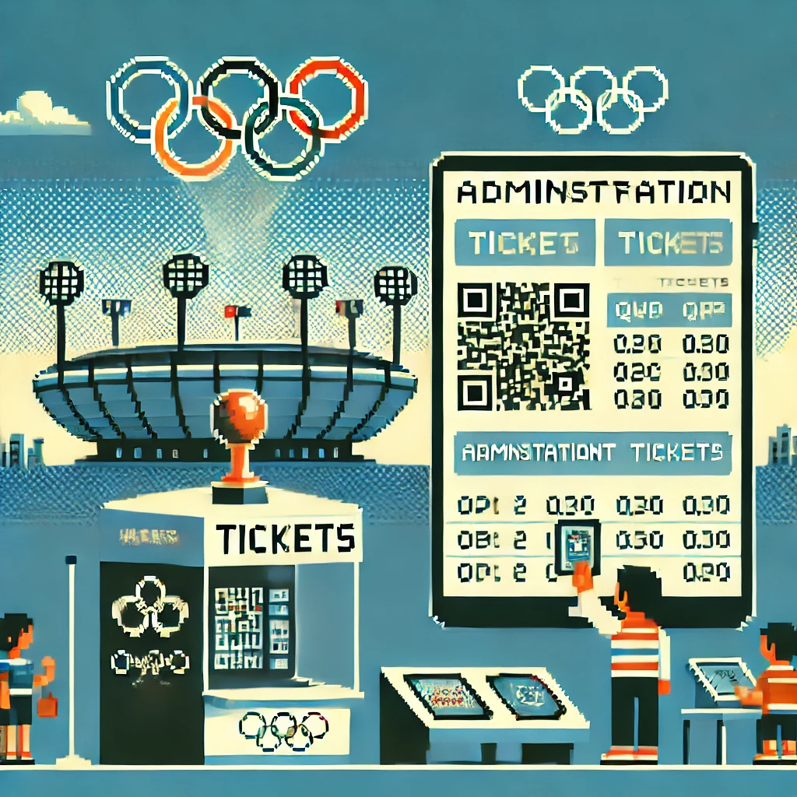

JO Tickets
Objectif
Application web développée pour gérer les billets des JO 2024. Elle comprend une interface admin (Django), une app mobile pour acheter et afficher les billets (avec QR Code), et une app de scan pour les contrôles à l'entrée.
Documents
Technologies
Python
HTML
CSS
JavaScript
Django
Compétences acquises
- Gérer le patrimoine informatique
- Développer la présence en ligne de l'organisation
- Mettre à disposition des utilisateurs un service informatique